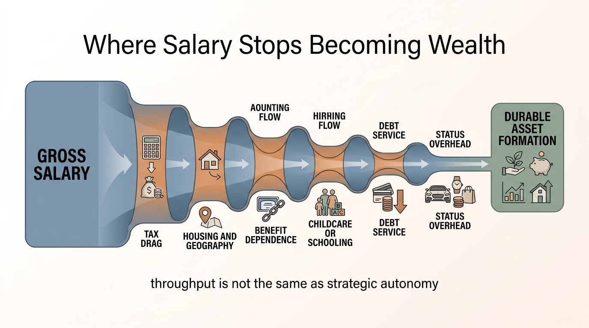

The Salary Ceiling Illusion
Salary looks like an infinitely scalable wealth engine when it is rising. The illusion breaks later. Promotion funnels narrow, tax drag steepens, elite-cost geographies absorb more of each marginal dollar, and the household discovers that labor income tops out long before its obligations stop compounding. High salary is real income. It is not automatically a wide wealth lane.
The core mistake is to confuse earnings visibility with earnings durability. A household sees a six-figure or seven-figure compensation package and assumes the balance sheet has escaped ordinary constraints. In practice, salary remains one concentrated income stream tied to employer budgets, role scarcity, local cost structure, benefit dependence, and a promotion pyramid that gets narrower at each level. Wealth damage begins when the household builds as if the next increment is guaranteed and broadly convertible.
Core thesis: the salary ceiling illusion is the tendency to treat labor income as if it scales like ownership income. The strongest established claim is that salary conversion weakens as taxes, fixed costs, and promotion scarcity rise. The more speculative but often correct inference is that many high-income households overestimate how much strategic freedom a salary actually buys once those frictions are modeled honestly.

Why Salary Feels More Scalable Than It Is
Salary has a clean visible number attached to it. Equity in a private business, intellectual property, carried interest, or owner cash flow is messier to value, harder to compare, and less legible in social life. That is why many professionals instinctively use salary as the main score of progress. The problem is that salary is linear only on the surface. Underneath it sits a much less linear structure of tax brackets, bonus volatility, employer leverage, and geographic cost capture.
The psychological effect is strong. Each raise feels like a durable widening of future freedom. Often it is partly the reverse. The raise can trigger housing upgrades, school commitments, staff or service reliance, tax exposure, and social expectations that consume the marginal gain before wealth has time to compound.
This is why salary should be read as throughput, not as net strategic capacity. Throughput matters, but it is only the first stage of the conversion chain.
Gross Compensation Is Not Deployable Capital
The first reduction is taxes. The second is local cost structure. The third is benefit substitution, because highly paid employees often receive insurance, retirement matching, equity packages, or status-linked services that are expensive to replace if the role changes. By the time the household gets to actual discretionary capital, the salary headline is already a much smaller number.
This is one reason equal salaries do not create equal outcomes across cities or professions. Two households can have identical pay and radically different savings conversion because one runs a lower fixed-cost stack with more portable benefits and a deeper cash buffer. The other may have more prestigious income and less real flexibility.
WealthMeter readers should therefore stop asking only “What do you make?” The more important question is “What fraction of that pay becomes durable capital after taxes, friction, and lifestyle capture?”
The Promotion Pyramid Gets Narrower Faster Than Households Think
Salary ceilings are not only about arithmetic. They are also about organizational geometry. Each rung up the ladder has fewer seats, more internal competition, longer evaluation cycles, and greater exposure to firm-specific politics. The household often projects recent promotion velocity into the future, even though the career structure has already changed from broad intake to narrow selection.
This is why high-earning professionals often experience a quiet plateau before they experience a crisis. The role still pays well. The next jump is harder, less frequent, and more contingent on factors outside direct effort. Once that plateau arrives, a household that has already spent in anticipation of future raises is effectively borrowing against a promotion geometry that may never deliver.
The illusion is not that salary can rise. It is that salary can keep rising at the same rate with the same odds.
Labor Income Tops Out Before Asset Income Starts Working
Ownership income is different because upside can detach from hours. Salary rarely does. Even at senior levels, labor income still depends on renewability of role, employer budget, and personal availability. That means salary has both a ceiling and a decay profile. It can flatten earlier than expected and disappear faster than households designed for.
This matters because true wealth acceleration often begins only when assets start compounding independently of labor throughput. A salary-heavy household that never converts enough of its peak earning years into resilient assets can look affluent for a long time while remaining structurally fragile. The household is rich in inflow but weak in autonomy.
In that sense, the salary ceiling illusion is closely related to the lifestyle lock-in problem. The household mistakes a high current stream for a permanent platform and uses it to justify a cost structure that only works while the stream stays near peak velocity.

Why High Salary And Weak Optionality Commonly Travel Together
High earners often live in expensive labor markets, which means their compensation is partly offset by housing, schooling, transport geometry, and social norms that are priced around the same salary bands. The result is a paradox: the household has impressive cash flow and limited freedom to step away from it. Income concentration rises while optionality falls.
This is also why golden handcuffs are not only about vesting schedules. They are about the interaction between household burn rate and the narrow set of roles that can support it. A household whose spending requires one specific compensation regime is not truly wealthy in a strategic sense, even if annual earnings are high.
The correct interpretation is not that salary is bad. It is that salary without disciplined conversion is a temporary advantage, not a finished wealth architecture.
What Households Should Measure Instead
- Savings conversion rate. Track how much marginal compensation actually reaches durable assets after taxes and lifestyle drift.
- Role replacement difficulty. Estimate how many external seats exist that can replace the current package without major relocation or benefit loss.
- Fixed-cost dependence. Measure how much of the household budget assumes peak compensation rather than median replacement income.
- Runway in months. Cash and liquid reserves determine whether a plateau becomes inconvenience or forced compromise.
- Ownership share. Ask what portion of future wealth growth can occur without proportional increases in labor time.
These measures are less flattering than headline pay, which is exactly why they are more useful. They reveal whether salary is building a platform or only financing a faster treadmill.
Known, Inferred, And Unknown
| Category | Assessment |
|---|---|
| Known | Labor income is highly concentrated in one employer and one role structure, which makes it fundamentally less durable than diversified asset income. |
| Known | Higher salary bands often face steeper tax drag, narrower promotion funnels, and cost structures that absorb a large share of marginal earnings. |
| Known | Households can display high income and weak resilience at the same time when savings conversion and liquidity remain low. |
| Inferred | Many professional households overstate their true wealth progress because they score themselves on gross salary rather than on autonomy, runway, and asset formation. |
| Unknown | How quickly AI, organizational redesign, and cost-of-living divergence will lower the practical salary ceiling across different white-collar fields. |
The Practical Reading For WealthMeter
The salary ceiling illusion belongs in the income-architecture lane because it explains why impressive earnings can coexist with disappointing wealth durability. The real dividing line is not between low and high salary. It is between households that convert salary into autonomy and households that convert it into obligations.
The disciplined response is to treat peak income years as a narrow window for asset formation, liquidity building, and benefit-portability design. A household that does that can survive the eventual plateau with leverage. A household that does not often discovers, too late, that salary was never as scalable as it looked.
Further Reading Inside The Site
This article connects directly to The Lifestyle Lock-In Curve, The Career Optionality Gap, The Golden Handcuffs Equation, and The Skill Obsolescence Curve. Together they show why income level and wealth resilience are related but not interchangeable.
Source List
Federal Reserve Board. Survey of Consumer Finances. Most recent public release.
OECD. Taxing Wages. Recent editions.
U.S. Bureau of Labor Statistics. Occupational Employment and Wage Statistics.
World Economic Forum. Future of Jobs Report 2025.
Goldin C. Work, Career, and the Structure of Earnings. Related research on nonlinear pay and career design.